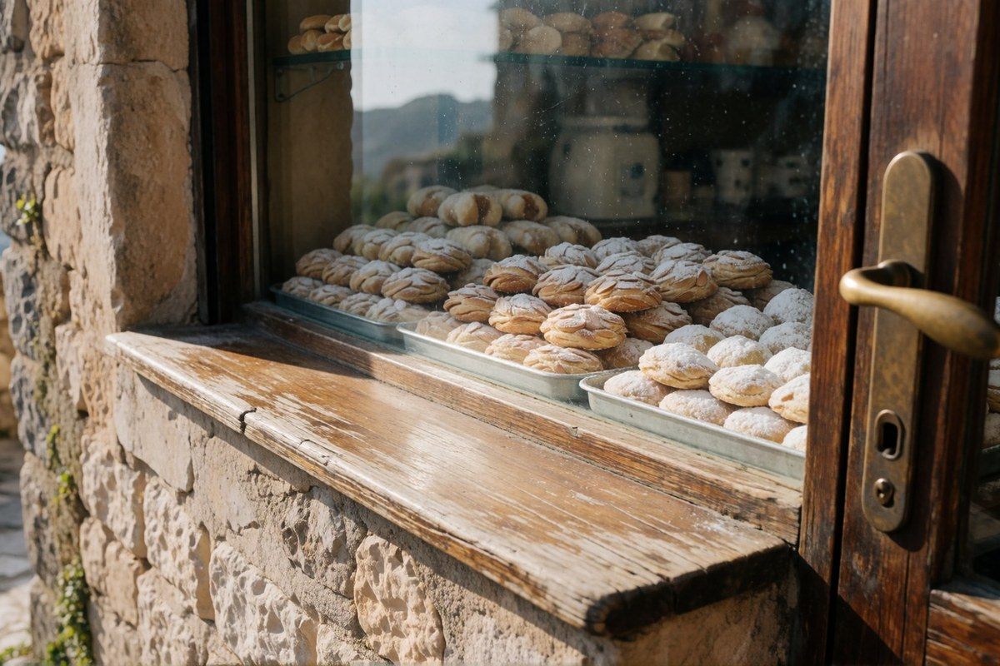

Sicilia · 26 novembre 2026
È morta Maria Grammatico, la pasticcera che portò Erice nel mondo

Aveva ottantacinque anni. Imparò l'arte dei dolci di mandorla da bambina, nell'istituto San Carlo, e nel 1964 aprì la sua prima bottega. Il lutto cittadino proclamato dalla sindaca, i funerali venerdì nel duomo.
di Franco Zanghì
Se n'è andata Maria Grammatico, la pasticcera che ha portato i dolci di Erice nel mondo. Aveva ottantacinque anni. La notizia è stata data giovedì 26 novembre 2026 dall'ANSA.
Una grave malattia, negli ultimi mesi, l'aveva tenuta lontana dalla sua bottega. Lì, fino a poco tempo prima, coordinava ancora i pasticceri nel retrobottega, e spesso stava alla cassa a chiacchierare con i clienti.
Siamo a Erice, in provincia di Trapani, il borgo sul monte che guarda il mare.
Dal convento alla bottega
La sua storia comincia dentro un istituto religioso. A undici anni entrò nell'istituto San Carlo, e lì imparò dalle suore a lavorare le mandorle e a preparare i dolci del convento: un sapere che non si insegnava altrove e che non usciva da quelle mura.
Il 1° giugno del 1964 aprì la sua prima pasticceria, portando fuori quelle ricette. A renderla conosciuta nel mondo sono state le genovesi, la frolla ripiena di crema che molti clienti chiedono ancora appena sfornata, e poi i dolci di pasta reale e quelli di mandorla.
La bottega, nel cuore del borgo, è diventata negli anni una tappa fissa per chi arriva a Erice: una fila davanti al banco, le teglie che escono dal forno e i nomi dei dolci detti in dialetto. Non un negozio per turisti, ma una pasticceria di paese che il mondo ha scoperto da sé.
La sua vita è diventata anche un libro, scritto con una studiosa americana di cucina, che ha fatto arrivare il nome di Erice nelle librerie di mezzo mondo.
Il saluto della città
La sindaca di Erice, Daniela Toscano, l'ha ricordata sui social: «Sarà uno dei simboli moderni di Erice». E ha aggiunto: «Chi l'ha conosciuta sa che non aveva bisogno di grandi discorsi, guardava più ai gesti». Il Comune ha proclamato il lutto cittadino.
I funerali saranno celebrati venerdì 27 novembre alle 16 nel duomo di Erice.
C'è un modo di raccontare la Sicilia che passa dai dolci più che dai discorsi. Una bambina mandata in convento che impara un mestiere, e sessant'anni dopo quel mestiere è un pezzo dell'identità di un paese: questa è una storia di lavoro, e vale la pena ricordarla così.
Fonti
- ANSA Sicilia, «Morta a Erice la pasticcera Maria Grammatico, rese celebri i dolci ericini nel mondo», 26 novembre 2026
- Giornale di Sicilia, «Morta a Erice la pasticcera Maria Grammatico», 26 novembre 2026
- La Sicilia, «Addio alla regina delle genovesi Maria Grammatico», 26 novembre 2026
- Itaca Notizie, «Erice piange Maria Grammatico, la sindaca proclama il lutto cittadino», 26 novembre 2026
- NewSicilia, «È morta la pasticcera che rese famosi i dolci di Erice nel mondo», 26 novembre 2026
- Tp24, 26 novembre 2026
Le fonti non indicano la natura della malattia, e qui non viene cercata. La data di apertura della prima pasticceria e l'età di ingresso nell'istituto San Carlo sono quelle riferite dalle testate e dalle biografie pubblicate: non è stato possibile verificarle su atti. Il titolo e il nome della coautrice del libro non sono riportati in modo uniforme dalle fonti consultate e per questo non compaiono nel testo.